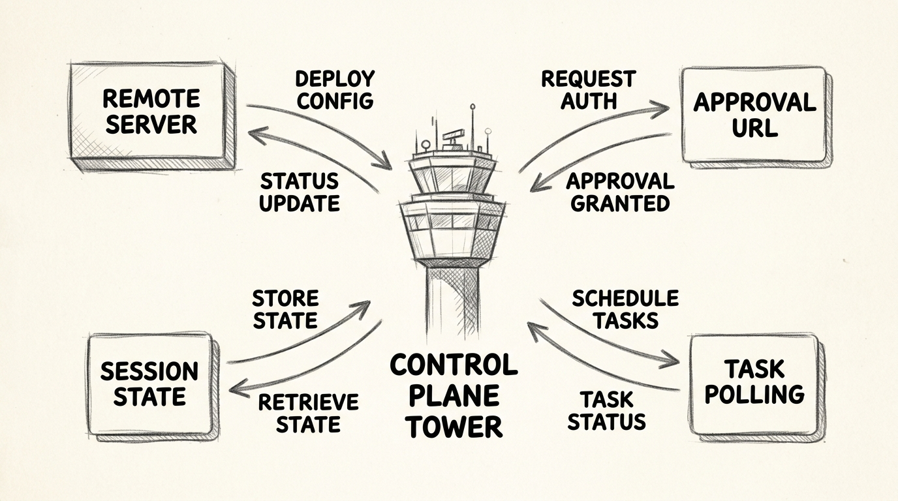
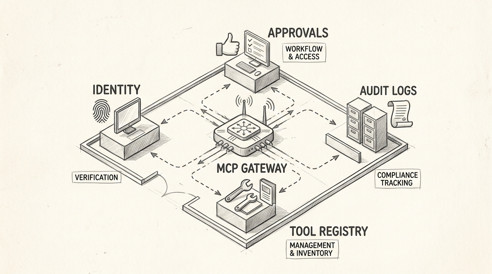
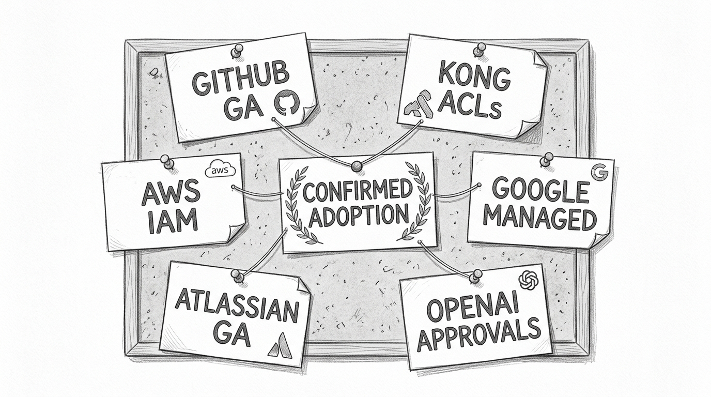
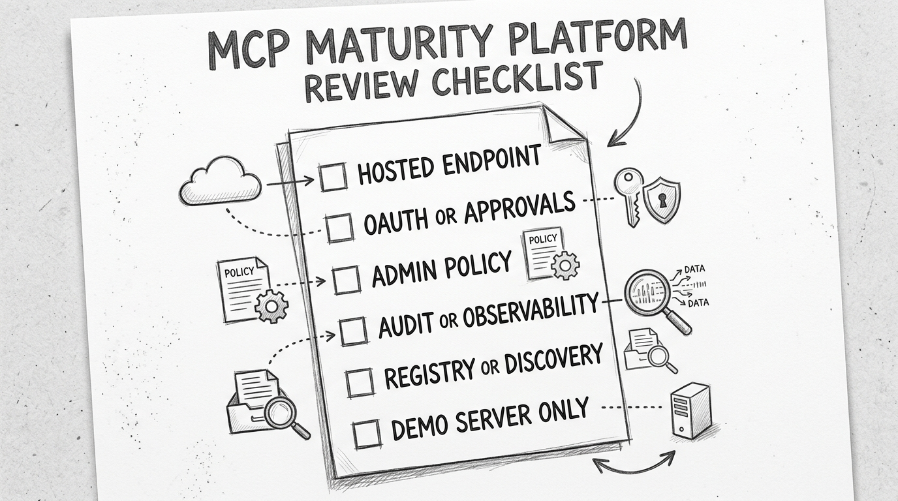

MCP Grew Up When the Control Plane Arrived
MCP Grew Up When the Control Plane Arrived
Security wants approval screens. Platform wants one gateway instead of twenty direct integrations. Audit wants logs. That pressure changed MCP more than any shiny new server did.
After 2025-06-18, the protocol story was not constant churn. It was one meaningful turn toward enterprise control.
flowchart TD
H([" The Shift "])
style H fill:#455a64,color:#fff,stroke:#90a4ae,stroke-width:3px,font-weight:bold,font-size:18px
If you only scan announcements, MCP looks noisy. The spec delta is simpler. The research found one later stable revision after the 2025-06-18 baseline: 2025-11-25. Its most substantive changes clustered around standard auth discovery, scoped consent, URL-mode elicitation, and experimental tasks for durable work. It also tightened Streamable HTTP guidance around sessions and resumability.
That is the real shift. MCP started looking less like a loose plugin format and more like something a platform team could operate.

The protocol language backs that up directly. The 2025-11-25 authorization spec says MCP servers must expose standard authorization metadata. The elicitation spec adds a URL mode for interactions that must stay outside the client transcript. The changelog adds experimental tasks for durable requests. Those are control-plane features. The Streamable HTTP changes are transport hardening that make remote MCP easier to operate.
flowchart TD
H([" Control Plane "])
style H fill:#455a64,color:#fff,stroke:#90a4ae,stroke-width:3px,font-weight:bold,font-size:18px
You can describe the change more plainly. Discovery becomes standardized. Approval steps move out of band. Sessions survive across requests. Long-running work gets tracked instead of guessed. That bundle is the control plane.
The server is the aircraft. The control plane is the tower.

Enterprise MCP is hard because real organizations need identity boundaries, scoped consent, visibility, and recovery when work spans multiple requests. A standard that supports discovery, approval, session handling, and durable execution is deployable.
That is also why registry work matters. GitHub's MCP Registry shows discovery becoming infrastructure instead of a pile of README links.
flowchart TD
H([" Who Is Real "])
style H fill:#455a64,color:#fff,stroke:#90a4ae,stroke-width:3px,font-weight:bold,font-size:18px
Confirmed adoption looks different from a search-result dump. The strongest examples are the ones that shipped the surrounding machinery.
GitHub is the cleanest proof: a GA remote server with OAuth 2.1 and PKCE. Kong is the clearest governance proof: hosted remote MCP, OAuth at the gateway, and tool-level ACLs. AWS is the clearest cloud proof: a managed MCP Server tied to IAM and CloudTrail. Google Cloud is the clearest cloud-governance proof: managed remote MCP with Cloud API Registry and Apigee governance. Atlassian Rovo is the clearest SaaS proof: GA hosted remote MCP with admin controls. OpenAI is the clearest runtime proof: remote MCP as a built-in tool with approvals and tool filtering.

Notice what these examples have in common. They are not winning on raw tool count. They are winning on hosted endpoints, OAuth, approvals, registries, ACLs, audit logs, and admin controls. That is MCP as platform infrastructure.
One public number reinforces the point. Sentry said its MCP traffic passed 30 million requests a month soon after launch. That remains the clearest hard number in the research.
flowchart TD
H([" What Counts "])
style H fill:#455a64,color:#fff,stroke:#90a4ae,stroke-width:3px,font-weight:bold,font-size:18px
The wrong way to judge MCP adoption is to count how many vendors wrote "supports MCP." The right way is to ask what they had to build around MCP to make it safe and useful.

If you buy AI platforms, ask where the control plane lives. Look for hosted endpoints, approval flows, org policies, audit logs, and discovery layers.
If you build MCP servers, assume descriptions, scopes, and policy boundaries matter as much as tool logic. Discovery and governance are now part of the product.
If you evaluate MCP maturity, discount broad compatibility claims that stop at "works with client X." The real evidence is OAuth, approvals, ACLs, IAM, CloudTrail, registries, and actual usage signals.
The pattern is bigger than MCP. A protocol starts to matter when operators can control it, not just call it. The post-2025-06-18 MCP story is not that the ecosystem got louder — it is that the control plane arrived.
References
- Model Context Protocol. "Changelog." modelcontextprotocol.io/specification/2025-11-25/changelog.
- Model Context Protocol. "Authorization." modelcontextprotocol.io/specification/2025-11-25/basic/authorization.
- Model Context Protocol. "Elicitation." modelcontextprotocol.io/specification/2025-11-25/client/elicitation.
- GitHub. "Remote GitHub MCP Server is now generally available." github.blog.
- GitHub. "Meet the GitHub MCP Registry." github.blog.
- Kong. "Enterprise MCP Gateway." konghq.com.
- Kong. "MCP Tool ACLs." konghq.com.
- AWS. "AWS MCP Server." aws.amazon.com.
- Google Cloud. "Announcing official MCP support for Google services." cloud.google.com.
- Atlassian. "Atlassian Rovo MCP Server is now generally available." atlassian.com.
- OpenAI. "MCP and Connectors." developers.openai.com.
- Sentry. "Sentry launches monitoring tool for MCP servers." sentry.io.